Eternal Wreckening
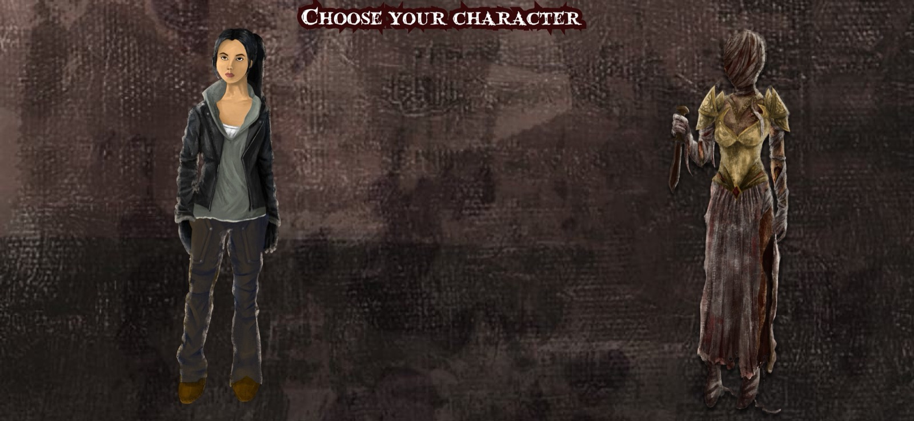
Solo Designer · 8 weeks · 2024 · Figma prototype and storyboard

Mobile games only use your thumbs.
Horror runs on presence, the sense that the threat is sharing the room. Keep the player's body outside the experience and you can't manufacture dread.

You play by turning the phone, shaking it and feeling it buzz.
Full-body orientation, then muscle fatigue, then a haptic pulse in the fingertips.

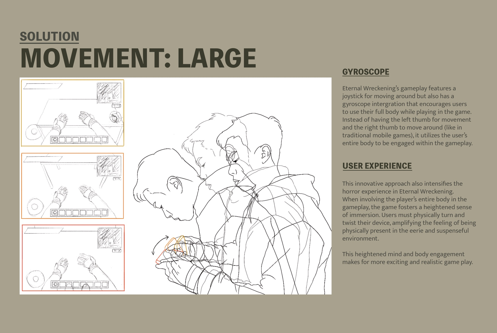

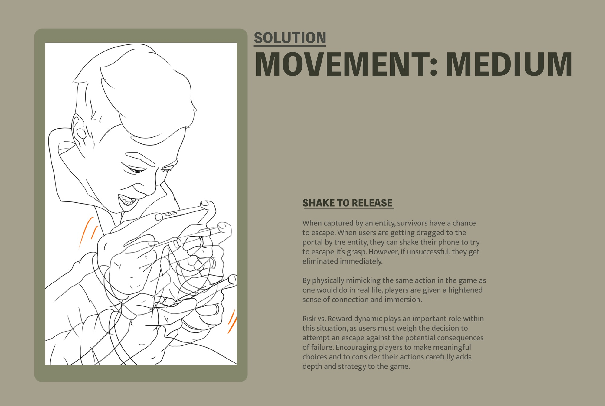

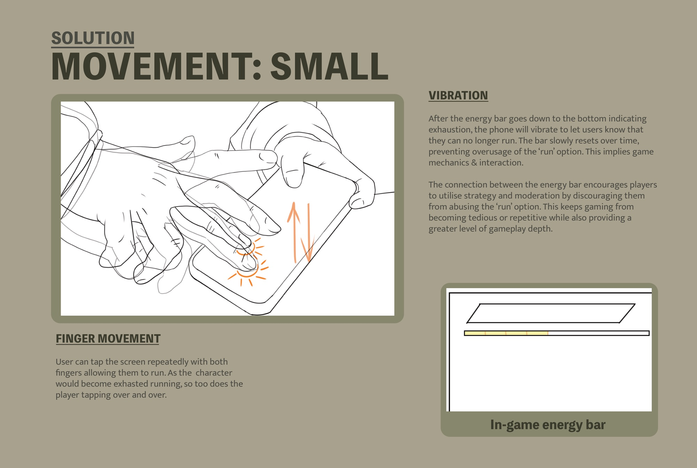
Four Guardians against one Entity.
A 4v1 asymmetric game inspired by Dead by Daylight. The Guardians find and destroy five Abyssal Amulets and throw the gems into the portal to close it. The Entity starts weaker, with reduced visibility, then keeps gaining power.

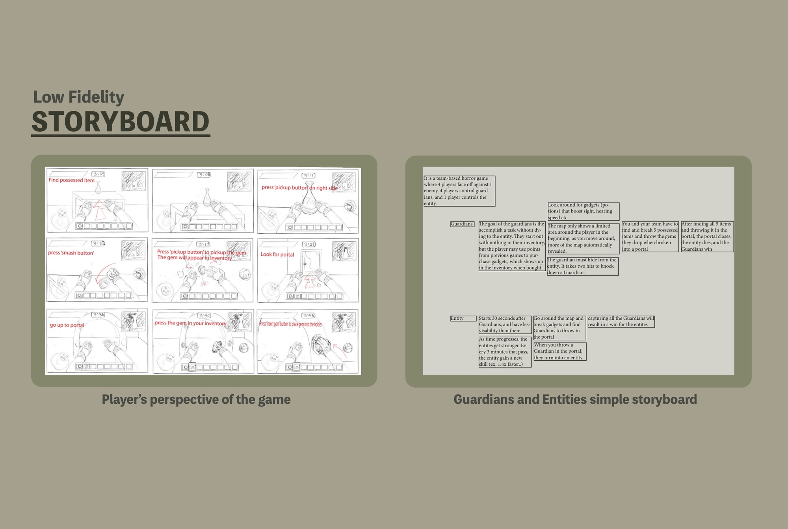

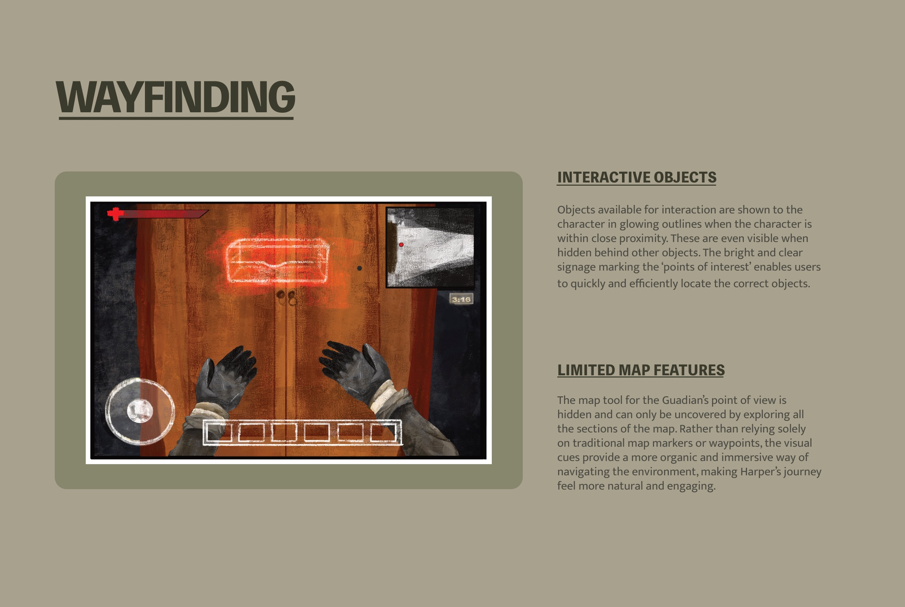

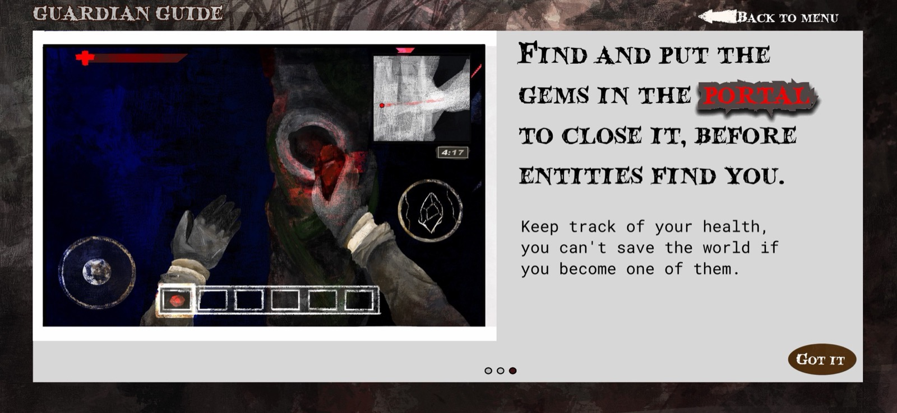

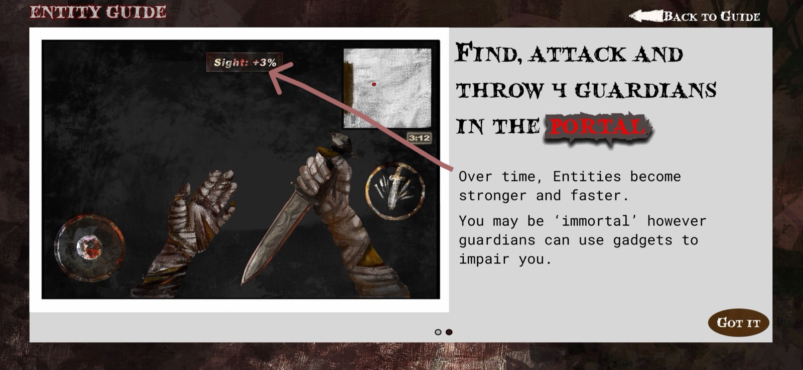
Gadget colors show what you have equipped at a glance.
Before each match, Guardians pick three tactical items. Gadgets live in a backpack, and the equip icon takes the color of the selected gadget.


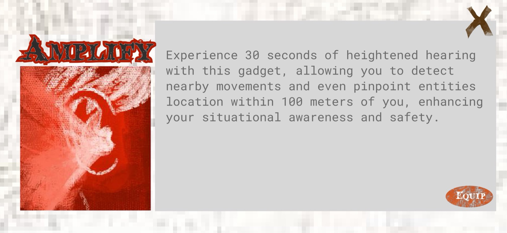

The environment sets the mood and the interface stays readable.
I hand-drew every environment and character with the same brush, in a painterly horror-realism style. Every interactive icon shares a circular base: round means you can touch it.

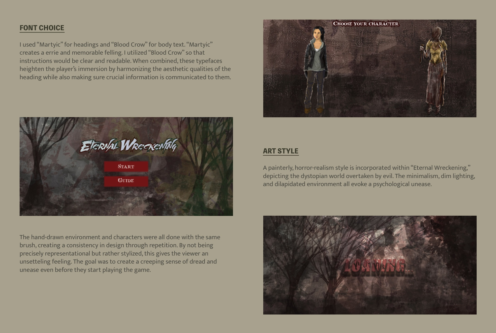

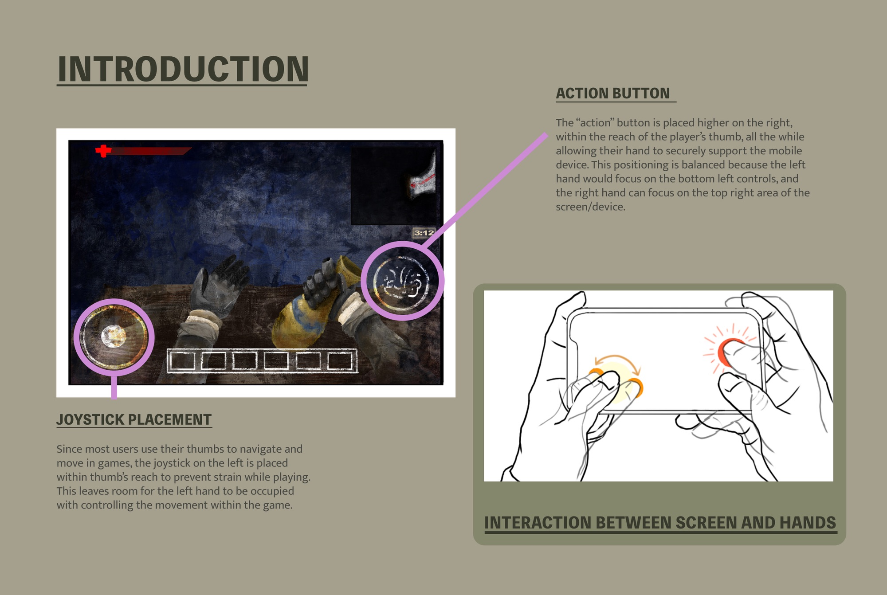
What I would change next time.
Physical mechanics need physical playtesting.
I reasoned the gyroscope and shake mechanics through on paper but never stress-tested them in live play. A shake under threat feels nothing like a shake while you're calm.
Onboarding new controls without breaking the horror.
Teaching three unfamiliar inputs inside a horror context is a tension I didn't fully crack. I think the answer is a low-stakes scripted encounter that teaches each mechanic through play.
The Entity is harder to design than the Guardian.
Most of my visual and interaction work sat with the Guardian's view. The Entity's UI deserves its own pass, and getting there takes a design language I haven't built yet.
How it was made
Role
I designed the game concept, controls, interface, characters, and storyboarded prototype.
Tools
Figma · InDesign · Photoshop
The match
Guardians, represented by Harper Stone, start with full visibility but face an unknown map. The Entity, played as Sorcha Nightshade, starts 30 seconds later and gains a new ability every three minutes: speed multipliers, enhanced detection, extended capture range.